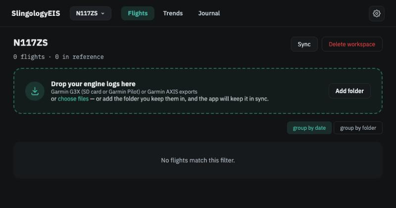
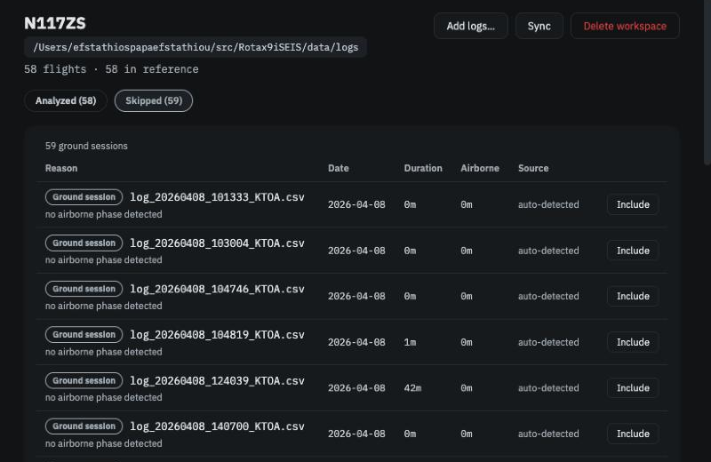

Logs, flights and workspaces¶
In brief. A log is a file your avionics wrote. A flight is a log the app has decided actually left the ground. A workspace is the app's view of one aircraft: the folders its logs live in, plus everything the app has learned and every decision you have made. Your logs stay where they are — the app only reads them — and you can have as many workspaces as you like, one active at a time. You meet all three on the Flights page.
Logs¶
Your Garmin avionics record an engine log every time the system is powered up. The app reads three forms of it: a G3X log copied straight from the SD card (named like log_20261005_172050_KAWO.csv), a Garmin Pilot export of the same data (usually a long random file name), and a Garmin AXIS export. You do not need to tell the app which is which; it recognises the format from the file. A workspace can mix all three, and if you later swap a G3X for an AXIS, your engine-hours history carries straight on, because both record the same engine meter.
The app never copies, moves, renames or edits a log. It reads the file, remembers what it found, and keeps a fingerprint of the content so that if you rename or reorganise your folders later, Sync recognises the same log in its new place.

Flights¶
Not every log is a flight. The avionics log an engine run with the aircraft never leaving the ground, a three-minute circuit, a session where the system was restarted halfway through. The app sorts these out when it first sees each log, and lists the ones it set aside under Skipped on the Flights page, each with its reason:
| Reason | What it means |
|---|---|
| Ground session | The aircraft never got airborne — an engine run, taxi or run-up only. |
| Short flight | Airborne for less than 10 minutes. Meant to catch pattern work too short to say anything about the engine; a twelve-minute hop still counts. |
| Corrupt log | A gap of more than five minutes inside one log, usually an avionics restart or an SD-card hiccup. |
| Unreadable | Not a Garmin engine log the app can read, or a file it could not analyse. The reason is shown; other logs are unaffected. |
Two export paths for the same flight — the SD card copy and a Garmin Pilot export — are recognised as one flight and shown once, using the more complete file.
If you think the app got one wrong, open it: a skipped log opens read-only in a Log preview with its chart and alerts, and Include this log overrides the decision and analyses it. Nothing is ever deleted.

Workspaces¶
A workspace is where the app keeps everything it derives from your logs — each flight's analysis, your reference, the decisions you have made, your Journal. It is tied to one engine model, chosen when you create it, because the Operators Manual limits differ between the 912iS, 915iS and 916iS.
A workspace is defined by one or more log folders. Subfolders are included. Add the folder where you already keep your logs (Choose folder…, or drop files onto the page) and the app reads whatever is there; add logs to that folder and the next Sync picks them up. A single log that has gone missing keeps its results until you choose to remove it.
Because the app runs in your browser, it reads your folders only with the browser's permission. Chrome keeps that permission between visits and occasionally asks you to confirm it (Allow access on the folder row). Safari forgets it when you leave, so the row shows Not connected — reconnect on your next visit; everything already analysed is still there, and you reconnect only to sync new logs or open a flight's charts. When the app runs as a program on your own computer instead, folders are typed as paths and stay connected; if one is on a disk that is unplugged, the app says so and offers Locate folder when it is back.
You can have as many workspaces as you like, and switch between them from the name in the top bar. Two reasons to have more than one:
- Another aircraft. Everything the app learns about "usual" is learned from one engine and never applied to another, so a second aircraft needs its own workspace. If logs from two tail numbers end up in one workspace the app notices and says so on every page where it matters.
- An experiment. A workspace that points at a folder holding only some of your logs — one season, one engine-hours range — gives you the same analysis on just those flights. The app does not filter flights for you; you choose by organising files in folders.
The workspace name is yours. The one you were last using reopens when you start the app.
Sync and re-analysis¶
Sync rescans the workspace's folders, finds new and moved logs, and asks before analysing: Found N new logs. Analyze now? It also tells you when existing flights need re-analysis — after an update to the analysis itself, or after you change something that affects every flight, such as assigning a log channel. Say yes once and the Flights page shows per-flight progress.
Where things are stored¶
| What | Where |
|---|---|
| Your logs | Wherever you keep them. Never copied or modified. (Logs that arrived inside an imported workspace are the one exception: the app keeps its own copy of those, with that workspace.) |
| Workspaces and their results | In your browser's private storage for the site — on this device, in this browser. Settings → App → Storage shows the space used and whether the browser has agreed to keep it; Delete all data there empties it. It survives restarts and app updates, but not clearing the site's data, so keep a workspace export as your backup. Derived from your logs; safe to delete and rebuild. |
| …when you run the app on your own computer | A data folder (~/SlingologyEIS by default, shown and changeable under Settings → App → Data location). Back it up like any other folder. |
A workspace belongs to the browser it was made in. To use it in another browser or on another computer, export it there and import it here — the export carries every decision you made, and the logs if you ask.
Walkthrough: Open the app and your first workspace.